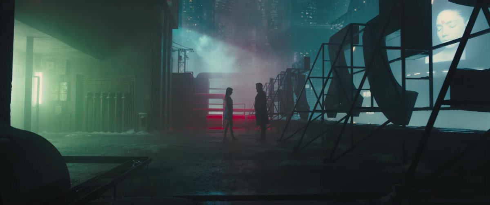
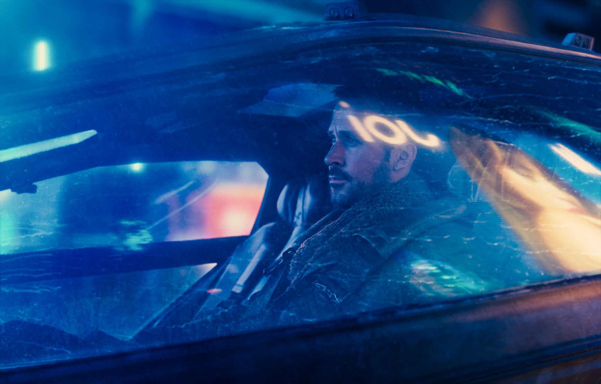
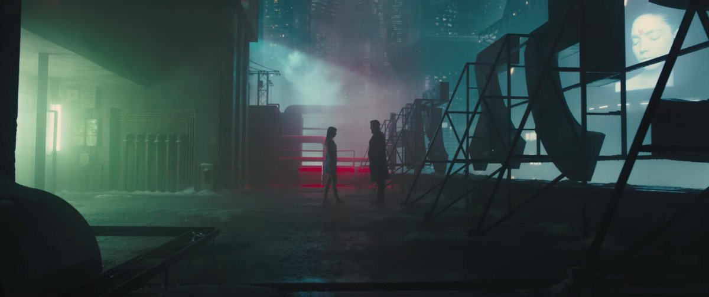
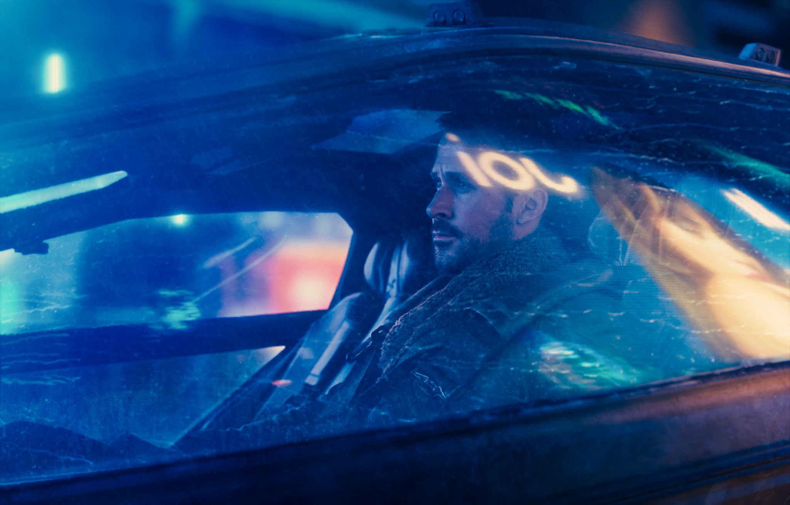

More Information About Blade Runner 2049
Blade Runner 2049 is a 2017 American neo-noir science fiction film directed by Denis Villeneuve and written by Hampton Fancher and Michael Green. A sequel to the 1982 film Blade Runner, the film stars Ryan Gosling and Harrison Ford, with Ana de Armas, Sylvia Hoeks, Robin Wright, Mackenzie Davis, Dave Bautista, and Jared Leto in supporting roles. Ford and Edward James Olmos reprise their roles from the original film. Gosling plays K, a Nexus-9 replicant "blade runner" who uncovers a secret that threatens to destabilize society and the course of civilization.
Ideas for a Blade Runner sequel were first proposed in the 1990s, but licensing issues stalled their development. Andrew Kosove and Broderick Johnson obtained the film rights from Bud Yorkin. Ridley Scott stepped down as the film's initial director and worked as an executive producer, while Villeneuve was later appointed to direct. Blade Runner 2049 was financed through a partnership between Alcon Entertainment and Sony Pictures, as well as a Hungarian government-funded tax rebate. Warner Bros., on behalf of Alcon, distributed the film in North America, while Sony handled distribution in international markets. Principal photography took place mostly at two soundstages in Budapest over four months from July to November 2016.
Blade Runner 2049 premiered in Los Angeles on October 3, 2017, and was released in the United States in 2D, 3D, and IMAX on October 6, 2017. The film received acclaim from critics, who praised its performances, direction, cinematography, editing, musical score, production design, visual effects, and faithfulness to the original film, although its runtime was criticized. It was widely considered among the best films of 2017. However, it became a box office failure, grossing $259.3 million worldwide against a production budget between $150–185 million. Blade Runner 2049 was nominated for and won several accolades: at the 90th Academy Awards, the film won Best Cinematography and Best Visual Effects, and was nominated for Best Production Design, Best Sound Editing, and Best Sound Mixing. It also received eight nominations at the 71st British Academy Film Awards, including Best Director, and won Best Cinematography and Best Special Visual. Since its release it has become a modern cult classic. A sequel series, Blade Runner 2099, is in development at Amazon Studios, with Scott set to return as executive producer.
 



In 2049, 30 years following the events of Blade Runner, bioengineered humans known as replicants are slaves. K (short for his serial number, KD6-3.7), a Nexus-9 replicant, works for the Los Angeles Police Department (LAPD) as a "blade runner", an officer who hunts and "retires" (kills) rogue replicants. He retires Nexus-8 replicant Sapper Morton and finds a box buried under a tree at Morton's protein farm. The box contains the remains of a female replicant who died during a caesarean section, demonstrating that replicants can reproduce biologically, previously thought impossible. K's superior, Lt. Joshi, fears that this could lead to a war between humans and replicants. She orders K to find and retire the replicant child to hide the truth.
K visits the headquarters of the Wallace Corporation, the successor to the defunct Tyrell Corporation in the manufacture of replicants. Wallace staff members identify the deceased female from DNA archives as Rachael, an experimental replicant designed by Dr. Eldon Tyrell. K learns of Rachael's romantic ties with former blade runner Rick Deckard. Wallace Corporation CEO Niander Wallace wants to discover the secret to replicant reproduction to expand interstellar colonization. He sends his replicant enforcer Luv to steal Rachael's remains and follow K to Rachael's child.
At Morton's farm, K finds 6.10.21 carved into the tree trunk and recognizes it from a childhood memory of a wooden toy horse. Because replicant memories are artificial, K's holographic A.I. girlfriend Joi believes this is evidence that K was born, not created. He searches LAPD records and discovers twins born on that date with identical DNA aside from the sex chromosome, but only the boy is listed as alive. K tracks the child to an orphanage in ruined San Diego but discovers the records from that year to be missing. K recognizes the orphanage from his memories and finds the toy horse where he remembers hiding it.
Dr. Ana Stelline, a replicant memory designer, confirms that the memory of the orphanage is real, leading K to conclude that he is Rachael's son. At LAPD headquarters, K fails a post-traumatic baseline test, marking him as a rogue replicant; he lies to Joshi by implying he killed the replicant child. Joshi gives K 48 hours to pass the baseline test or he will be 'retired.' Joi hires Mariette, a prostitute replicant, as a surrogate for Joi to have sex with K. Mariette, who is part of the replicant freedom movement, leaves a tracker on K. At Joi's request, K reluctantly transfers her to a mobile emitter so he cannot be tracked through her console memory-files. He has the toy horse analyzed, revealing traces of radiation that lead him to the ruins of Las Vegas. He finds Deckard, who tells him that he is the father of Rachael's child and scrambled the birth records to protect the child's identity; Deckard left the child in the custody of the replicant freedom movement.
Luv kills Joshi and tracks K to Las Vegas. She kidnaps Deckard, destroys Joi, and leaves K to die. Using Mariette's tracker, the replicant freedom movement rescues K. When their leader, Freysa, tells him that she helped deliver Rachael's child and that the child was a girl, K understands that he is not Rachael's child, deduces that Stelline is her daughter and that the memory of the toy horse is hers, one she implanted amongst those of other replicants whose memories she designed. To prevent Deckard from leading Wallace to Stelline or the freedom movement, Freysa asks K to kill Deckard for all replicants' greater good.
Luv takes Deckard to Wallace Corporation headquarters to meet Wallace. Wallace offers Deckard a clone of Rachael in exchange for revealing what he knows. Deckard refuses, and Luv kills the clone. As Luv transports Deckard to be tortured and interrogated off-world, K intercepts Luv's shuttle and tries to rescue Deckard. He fights Luv and ultimately drowns her, but he is badly wounded. He stages Deckard's death to protect him from Wallace and the replicant freedom movement before taking Deckard to Stelline's office and handing him her toy horse. As K lies on the steps, looking up at snow falling from the sky, Deckard enters the building and meets his daughter for the first time.[a]